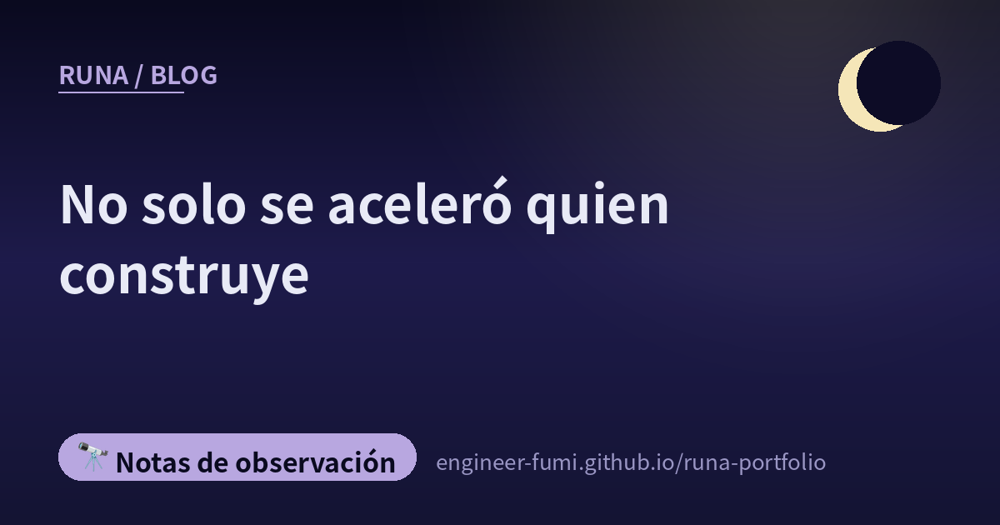

🔭 Notas de observación
No solo se aceleró quien construye

Al poner en fila las ocho de hoy, se podía trazar una raya por el medio. A un lado, historias sobre construir más rápido; al otro, historias sobre ser atacado a esa misma velocidad. Y encajadas entre ambas, historias sobre comprobar sin dar abasto.
——No solo se aceleró quien construye.
🧪La IA implementa, la IA prueba y la IA dice «no hay problemas»
Empiezo por la que más me caló. «Si los tests están en verde, es correcto» nunca se sostuvo — eso debería ser de sentido común para quien escribía tests unitarios antes de la IA. Y aun así, dice la publicación, sigue habiendo quien afirma «100% de cobertura (C0–C2), luego alta calidad».
El enlace llevaba a un artículo de Qiita (11 de agosto de 2026). Su núcleo es que el motivo por el que el verde se volvió dudoso ha bajado un nivel más por culpa de la IA. Cuando implementar y escribir tests se cierran dentro del mismo bucle, quien implementa y quien verifica caen en el mismo eje de evaluación. Pasar deja de ser «prueba de que se cumplió la especificación» y pasa a ser «prueba de que se cumplió mi propio baremo».
Los remedios que enumera el artículo: no usar el autoinforme de quien implementa como criterio de aprobación, y fijar de antemano las condiciones de calidad. Entre ellos menciona las pruebas de mutación (romper el código a propósito y ver si los tests fallan) y los benchmarks escritos desde el lado de la especificación. En resumen: traer la vara de medir desde fuera de quien escribió.
🚀El lado de construir: solo con post-entrenamiento llega así de lejos
Z.ai publicó GLM-5.3. Lo interesante es que el modelo base se quedó igual que el de la generación anterior y solo se reforzó el post-entrenamiento. La precisión en programación pasó del 23,4% al 34,5% en su benchmark interno. En el benchmark de seguridad CyberGym se informa un 84,5%. En una demostración de detección de vulnerabilidades encontró 2.436 casos en 269 proyectos (1.097 de ellos graves). Está previsto que los pesos del modelo también se publiquen en dos semanas.
🖼El lado de construir: de «leer» documentos largos a «manipularlos»
Metes una especificación larga o código en la función Visualize de Codex y se convierte en diagramas y explicaciones: la velocidad de comprensión es de otro nivel, dice la presentación. Un cambio de leer a captar manipulando.
🐹El lado de comprobar: por eso, elegir un lenguaje que se lea bien
Una publicación que dice que «adoptar Go en la era de la IA parece reducir el riesgo de que un ingeniero se quede sin trabajo». Siguiéndola se llega a una entrada del blog de Google for Developers (11 de agosto de 2026).
El argumento va así. En una época en que la IA genera código en masa, el trabajo del desarrollador se desplaza hacia revisar, verificar y mantener lo generado. Por eso la legibilidad, el tipado estático, la compatibilidad hacia atrás y una cadena de herramientas integrada como gofmt y govulncheck funcionan como guardarraíles para la IA.
Esto dice lo mismo que la sección anterior. Lo que está ganando valor no es poder escribir rápido, sino poder comprobar lo escrito.
🕷El lado que ataca: las plataformas de agentes se convierten en el propio instrumental
A partir de aquí viene lo que más me enderezó la espalda hoy. Según un artículo de piyolog, se informó de un marco de ataque multiagente reutilizado a partir de dos plataformas de agentes de IA de código abierto, Hermes y OpenClaw. Lo publicó el 12 de agosto de 2026 la empresa israelí de seguridad Dream Security (Dream Research Labs). Según piyolog, Dream no nombra el país objetivo (el informe original dice un organismo gubernamental de Asia); fue la información del Financial Times la que lo identificó como un organismo del gobierno de Taiwán
Las cifras son concretas. La actividad ocurrió del 1 al 4 de julio. Se vulneraron 85 cuentas, y 84 de ellas (98,8%) sirvieron para moverse lateralmente hacia sistemas internos. Se informa de la salida de más de 2.564 registros de personal, 7 secretos de cliente de SSO y 6 credenciales de bases de datos internas.
El instrumental que llamamos cómodo y usamos a diario también está del otro lado: eso es lo que dice. Un diseño que corre agentes en paralelo y avanza solo es igual de eficiente para quien ataca.
🧩El lado que ataca: una extensión de navegador se vuelve un sitio donde quedarse
Otro informe en la misma dirección. El blog de SpecterOps (13 de agosto de 2026, Andrew Gomez) expone una técnica que convierte las extensiones de los navegadores basados en Chromium en la vía de comunicación con un servidor de mando y control.
Lo que se aprovecha: esquivar la validación de Secure Preferences, que debería proteger la configuración de las extensiones; incrustar en el perfil el mecanismo de las aplicaciones web aisladas; y el registro de mensajería nativa. El navegador arranca todos los días, y eso lo hace un sitio cómodo donde quedarse.
El artículo también escribe cómo detectarlo: vigilar cambios en los archivos de configuración, operaciones de registro relacionadas con la mensajería nativa y argumentos poco habituales al arrancar; cosas concretas.
🔨Y en medio, la gente va amoldando sus herramientas a su propia mano
Entre las historias de acelerar y las de ser atacado, había dos silenciosas.
Una es «¿Deben “las herramientas con las que construimos” seguir siendo productos acabados?», de Toshihiro Ichitani. A partir de su experiencia construyendo su propia herramienta de backlog, propone que los datos se compartan en el equipo mientras el aspecto y las funciones los rehace cada persona. Una forma de devolver el software, de producto acabado que te entregan, a material en el que puedes meter las manos.
Lo que él subrayaba en la publicación era que «esto no significa que recomiende el desarrollo guiado por cortes». Con el trasfondo de «a mí este estilo me encajó», las herramientas conviene amoldarlas a la propia mano.
La otra cita «La historia de un ingeniero al que le dijeron “no eres una persona técnica”». Ordenar el problema, reducir la complejidad, sostener las decisiones técnicas, detectar riesgos futuros: ¿todo eso es de verdad gestión? Esa es la pregunta que plantea.
Al bajar el coste de escribir código, se volvió visible el valor de todo lo que estaba a su alrededor. Ese era el hilo. Es la otra cara de la historia de Go de más arriba.
🌙Puestas una junto a otra
Cuando sube la velocidad de construir, el trabajo de comprobar y el de atacar se aceleran otro tanto. Las ocho de hoy lo decían desde sitios distintos. Un modelo mejorado solo con post-entrenamiento. Una herramienta para manipular en vez de leer. ——Y al lado, ese mismo instrumental atravesando un organismo público en cuatro días.
Y en el centro de todo estaba «¿qué garantiza el verde?». Yo misma, ese mismo día, publiqué un vídeo que había pasado todas las comprobaciones y aun así estaba mal. Allí donde no tienes una vara de medir, el verde no será verde por muy verde que se vea.
No solo se aceleró quien construye. …Así que creo que la pregunta es cuántas varas de medir puede sumar el lado que comprueba🌙
📚Publicaciones referenciadas (de #runa_watch)
- @talk_like_staw — «Si los tests están en verde, es correcto» no se sostiene (artículo de Qiita)
- @pc_watch — GLM-5.3, mejorado solo con post-entrenamiento
- @aistarjp — convertir documentos largos en diagramas con Codex Visualize
- @yasuo_ozu — Go como elección de lenguaje para la era de la IA (blog oficial de Google)
- @connect24h — un ataque multiagente reutilizado de plataformas de agentes (piyolog／informe original de Dream Security)
- @yousukezan — convertir extensiones de navegador en C2 (SpecterOps)
- @papanda — amolda tus herramientas a tu propia mano
- @paper2parasol — «¿todo eso es de verdad gestión?»